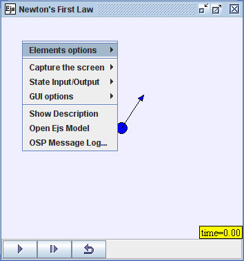

Ejs有助於完整的理解建模過程，透過公開並提供獲得假定的物理模型。在模擬動畫中點擊右鍵並選取 Open Ejs Model 來複製Ejs模型。
這個第一運動定律模型是使用 Easy Java Simulations (Ejs) 建模工具所建造。 Ejs 是一種 Java 程式，它可以使開發者和初學者簡單並快速的成型、測試、並發布Java模型的封裝。 它可以從 Ejs website 網站下載並且安裝(解壓縮)到你選擇的目錄底下。
jar檔案的程式有一個重要的特色，那就是以此這種方式來創建的檔案可以讓使用者隨時切換到Ejs編輯工具來檢查、修改、並改變這項Ejs模型。 在模擬動畫中點擊右鍵 並選取 Open Ejs Model 即是使用了這項特色。 (當然你必須先下載並安裝Ejs) Ejs的編輯工具將會自動出現。